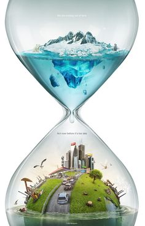
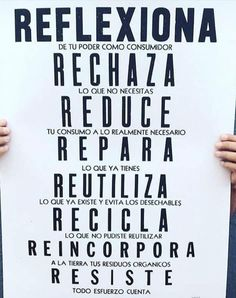

Nunca tires productos tóxicos, pintura o aceite de cocinar al desagüe.
Separa la basura según su composición, papel y cartón, plásticos, vidrio y residuos orgánicos.
Reducir
Investigar el arrendamiento de su equipo.
Impresión en ambas caras del papel.
Utiliza los transportes públicos, camina o usa la bicicleta.
No dejes el grifo del agua abierto en exceso.

Reutilización
Utilice recipientes reutilizables.
Consiga sus materiales a través del intercambio.
Reutiliza las bolsas de plástico tantas veces como puedas, y al final como bolsa de basura para llevar los envases al contenedor amarillo.
Donar bienes duraderos a una buena causa.
Lleva al punto limpio los residuos especiales como aparatos eléctricos y electrónicos, bombillas, baterías, restos de pinturas, radiografías, aceite de cocina, etc.

Contacta con nosotras IG: @paolasr_03 @maariiiana__